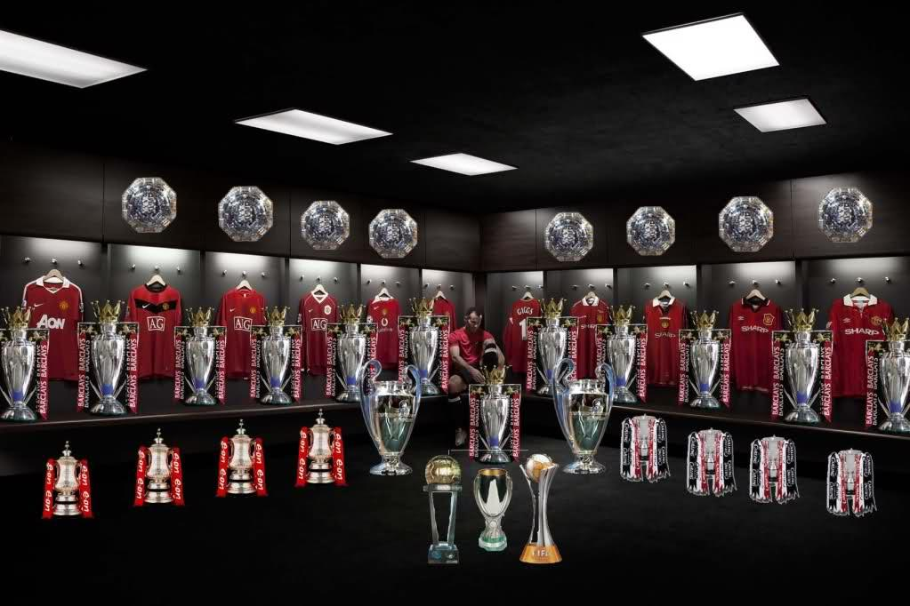

THE REDS
HOME
ABOUT
THE TEAM
HISTORY
CONTACT US
OUR HISTORICAL STORIES
1878-1909
1910-1919
1920-1929
1930-1939
1940-1949
1950-1959
1960-1969
1970-1979
1980-1989
1990-1999
2000-2009
2010 +

OUR LEGENDS
ARTHER ALBISTON
GEORGE BEST
BILL FOULKES
SIR BOBBY CHARLTON
BRAIN MCCLAIR
BRYAN ROBSON
MICHEAL CARRICK
DENIS IRWIN
GARY NEVILLE
JOE SPENCE
ROY KEANE
MARK HUGHES
PAUL SCHOLES
RIO FERDINAND
WAYNE ROONEY
RYAN GIGGS
ALEX STEPNENY
TONY DUNNE